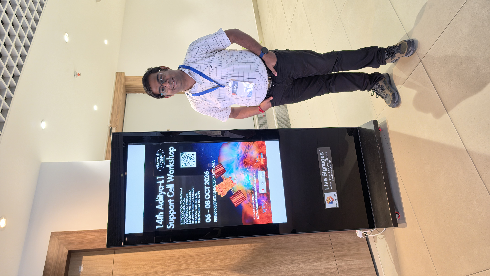

2026
14th Aditya-L1 Support Cell Workshop
Resource PersonMy Contribution
I participated as a Resource Person at the 14th Aditya-L1 Support Cell Workshop, held at Sister Nivedita University, Kolkata, from 6 to 8 October 2026.
The workshop provided an opportunity to engage with students and researchers in the context of solar physics and India's Aditya-L1 mission.
